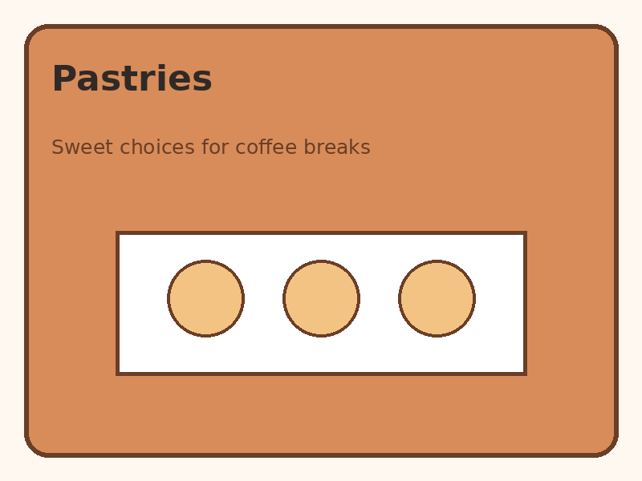
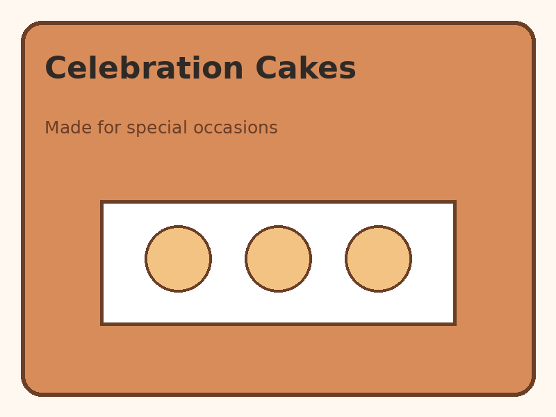
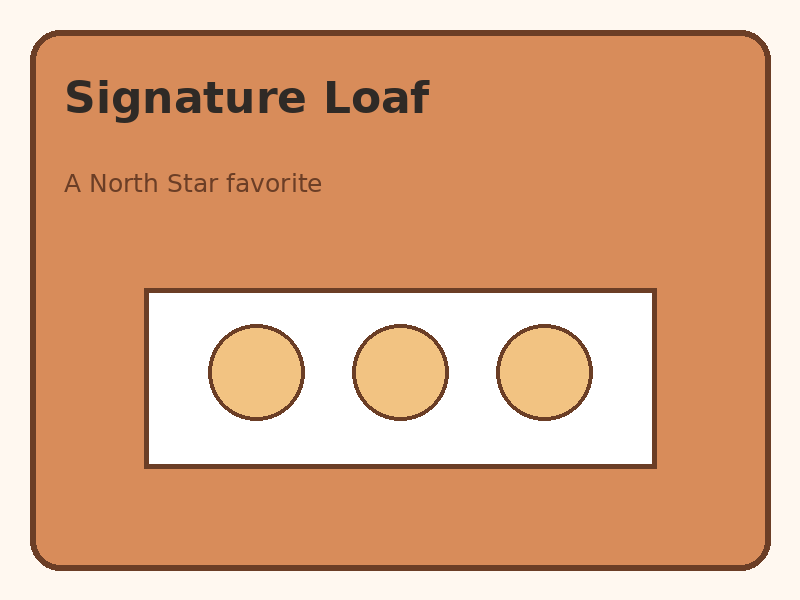

Our Products
My Bakery Favorites
You have no saved favorites yet.
Prices and availability are examples and should be confirmed with the bakery before pickup.
Breads
Handmade loaves for toast, sandwiches, and family meals.
Sample price range: $5–$10 per loaf.
Pastries
Individual pastries for breakfast, coffee breaks, and small gatherings.
Sample price range: $3–$6 each.

Cakes
Celebration cakes for birthdays and community events. Tell us the occasion, serving count, and preferred flavors.
Sample price range: $25–$75.


Planning a Pickup
This website does not use online checkout. Send an inquiry so the bakery can confirm item details and pickup availability.
Ask About an Item